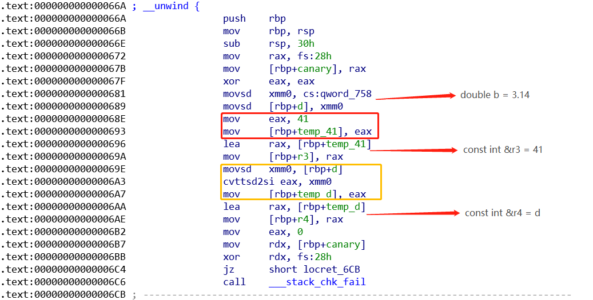
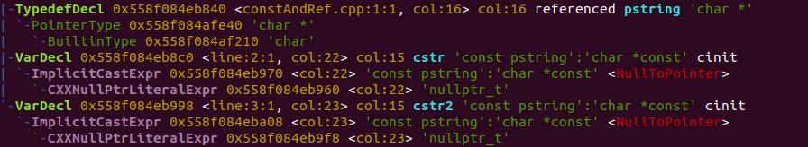
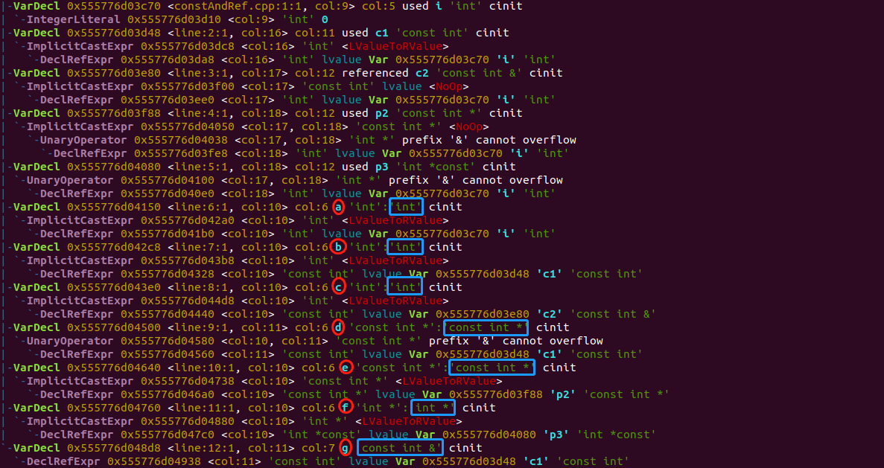

C++ 中 const 的那些事
前言
const 关键字常被用于定义一个常量，用法较多的可能是定义常量指针、指向常量的指针和指向常量的引用，但是 const 还是有很多冷门的语法特性，如果使用不当，可能会导致我们写的代码不符合预期，且很难找到错误，因此作如下总结。
const 和引用
由于引用本身不是一个对象，所以引用在初始化的时候只能绑定在对象上，而不能与字面值或某个表达式的计算结果绑定在一起，且引用的类型必须和与之绑定的对象严格匹配。如下示例对引用的使用方式，是无法通过编译的：
1 | double d = 3.14; |
但是当 const 和引用一起用的时候，则有了特殊变化
1 | double d = 3.14; |
在上述 const int &r3 = 41 这条指令中，引用 r3 绑定了一个字面值常量 41 ，这看起来似乎很不合逻辑，因为引用本身并不是一个对象，则有了如下问题：①．这个 41 应该存放在哪呢？且在 const int &r4 = d 这条指令中，d 是一个 double 类型的变量。②．为什么可以绑定到一个 const int 类型的引用 r4 上呢？③．如果 d 被修改了，r4 会改变吗？通过将上述代码编译后反汇编，如下图所示：

- ① 可以看到，红色框内的汇编代码代表编译器自动在栈中生成了一个内存空间用来存放字面值常量 41 ，然后令 r3 绑定到该内存空间，但注意，由于在 C++ 源代码中，r3 被声明为了 const 类型，所以即使其在底层确实指向了一个内存空间，但 C++ 程序员仍然不能通过代码来修改其值。
- ② 在黄色框内的汇编代码代表将 double 类型的变量 d 经过强制转换生成一个临时的整型量，然后将其存放在编译器生成的内存空间 temp_d 中，然后再令 r4 与该内存空间绑定。
- ③ 由以上可知，r4 所绑定的内存空间与变量 d 所在的内存空间不是同一块内存空间，所以修改 d 的值不会改变 r4 所绑定的值。测试以下代码：
1
2
3
4
5
6
7
8
9
10
11
12
13
14
15
16
17
18
19
20
21
22
23
using namespace std;
int main()
{
double d = 3.14;
const int &r4 = d;
cout << "befor modify ================ \nr4: " << r4 << "\nd: " << d << endl;
d = 6.28;
cout << "after modify ================ \nr4: " << r4 << "\nd: " << d << endl;
return 0;
}
// output:
llvm@ubuntu:~/learning$ ./a.out
befor modify ================
r4: 3
d: 3.14
after modify ================
r4: 3
d: 6.28
默认状态下，const 对象仅在文件内有效
对于一般我们定义的全局对象是具有全局链接属性的，也就是说在 a 文件中定义的全局对象，只需要在 b 文件中用 extern 关键字声明即可。但是 const 对象默认是仅仅在文件内有效， 也就是说在文件 a 中定义一个 const 对象，在 b 文件中是无法访问的，即使在 b 文件中用了 extern 关键字来声明。那么如何将定义的 const 对象加上全局属性呢？其实很简单，只需要在定义时加上 extern 关键字修饰即可。如下例：
1 | // a.cpp |
1 | // b.cpp |
const 和类型别名
1 | int i = 10; |
如上述代码所示，const 放在不同的位置会有不同的含义，因此也区分出指向常量的指针和常量指针之分，但是这种规则在和类型别名结合时又有意想不到的结果。如下：
1 | typedef char *pstring; //pstring是char *的别名 |
可能一般来看，将 pstring 展开为 char*，则上述第二行代码会被理解为指令 const char * cstr1 = nullptr，也就是将 cstr 看成指向常量的指针，但是实际上，它却是一个常量指针。这样的话，上述第二行代码和第三行代码中定义的变量就是等价的类型，相当于都执行了 char *const cstr = nullptr。我们也可以通过 clang 将上述代码输出，如下：

显然，cstr 和 cstr2 是同一个类型，即 char *const。
const 和 auto
auto 是让编译器根据初始值来推断所定义的变量的类型，在 auto 的推断过程中，一般遵循两个原则：
- 当引用被当做初始值的时候，真正用于推断 auto 类型的初始值实际上是引用对象的值。
- 当用于推断 auto 类型的初始值是常量时，如果可以忽略其常量性质，则忽略其常量性质。
1 | int i = 0; |
用 clang 语法树验证如下：

由此可以得出结论， auto 在与 const 结合的时候，会尽量放弃推断类型时依赖的初始值的 const 属性，只有在确实不能放弃其 const属性时才会给推断的结果加上 const 属性。
参考资料： 《C++ Prime》